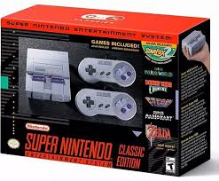
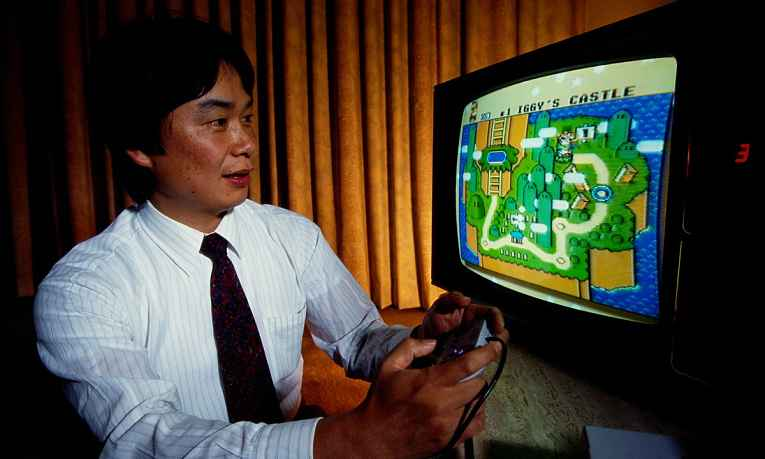

- 
- 
Inicio do Console
O Super Nintendo Entertainment System é um console de videogame de 16-bits da quarta geração desenvolvido pela Nintendo, que foi lançado no período de 1990 à 1993 em várias parte do mundo.
Tudo começou quando a NEC decidiu competir com o famoso NES, lançando o videogame TurboGrafx-16 em Outubro de 1987. Já a SEGA lançou o videogame Mega Drive em 1988. Como os dois videogames tinham processadores de 16-bits, mais avançados que o NES, então a empresa japonesa Nintendo decidiu unir as forças para lançar um videogame com o novo sistema, criando assim o sucessor do Nintendo (Famicom no Japão) batizado com o nome de Super Nintendo (Super Famicom no Japão).
Historia no Brasil
No Brasil, o console chegou oficialmente apenas em 30 de agosto de 1993, fabricado pela Playtronic, representante oficial da Nintendo no país na época, sendo fabricado por muitos anos em Manaus, até a saída da Gradiente do ramo, em 2003.